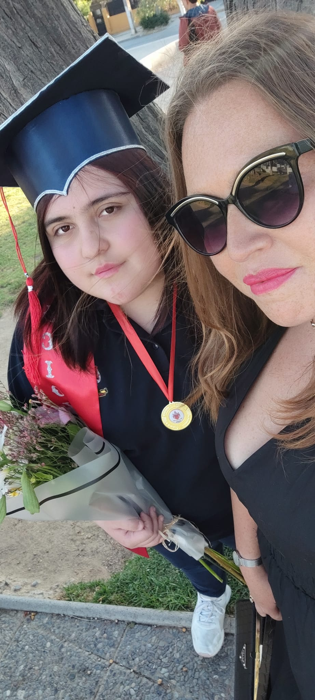

He creado un pequeño espacio para nosotras

Desde siempre has estado conmigo...en mis primeras palabras, pasos y caidas...en mis momentos importantes durante la vida y es por eso que en tu dia te quise hacer algo unico...disfrutalo :)

Gracias por estar conmigo incluso cuando era dificil...cuando todo mi mundo se venia abajo tu estabas siempre alli para ayudarme a reconstruirlo aun que demorara años...aun cuando yo pensaba que no valia la pena seguir tu alli estabas haciendome ver que por más oscuro que se ponga todo siempre hay un rayito de luz entrando por la ventana...siempre que estaba mal me abrazabas, consolabas y sonreias aun que por dentro estuvieras preocupada, estresada o cansada....eso hoy en dia significa mucho y aun que en algun momento de nuestra historia hubieron problemas, roces o dias malos quiero que sepas que jamas te culpe o odie aun cuando mis acciones demostraban lo contrario...porque por más mal que estuviera la cosa si algo sucedia la que estaba alli para mi eras tu...tu me parabas y curabas una y otra vez...y eso te lo agradecere de por vida porque eres mi madre y mi salvadora....tambien quiero que sepas que para mi eres la madre más luchona que podria existir...aun que tu mundo tambien se caia tu jamas nos dejaste ver eso y te mantenias firme....Hoy en el dia de las madres quiero decirte que estoy feliz de que tu seas la mia...no me pudo haber tocado una mejor madre que tu...eres valiente, fuerte, resiliente y sobre todo una gran mujer....a pesar de todo aqui sigues ayudandome a ordenar mi vida aun que yo ya no viva a tu lado...sigues recordandome que vale la pena seguir...y que despues de la tormenta siempre sale el sol...estoy orgullosa como hija por ti...porque aunque algunos se reian o decian "no creo que puedas", "estas muy grande para eso" tu decidiste arriesgarte y empezar a formarte como una profesional...te esfuerzas dia a dia para perseguir tus sueños y tu titulo y eso es realmente admirable...ya no me quedan más palabras para describir todo lo que hoy en dia siento...eres la mejor mamá y amiga jaja te amo no solo con mi corazon si no que tambien con mi alma...siempre estar alli para ti...para que te apoyes en mi asi como yo me apoye miles de veces...para ayudar con tus trabajos jaja y tambien a que te sientas orgullosa de quien eres hoy en dia...solo me queda decir que le deseo lo mejor y que BRILLE...brille como nunca y sea feliz con cada paso y decision en su vida que ha dado... Con mucho amor: Su hija perezosa <3